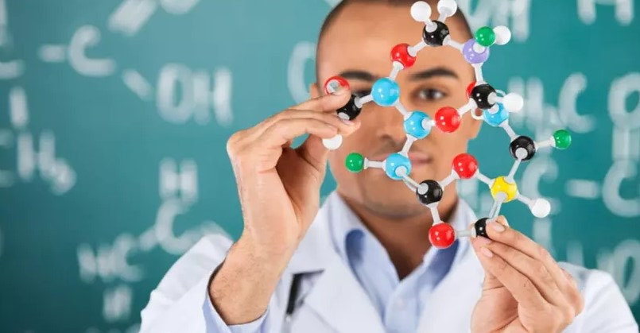
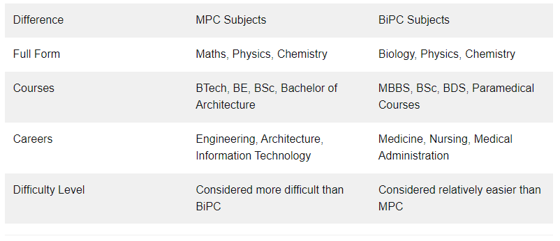

BIPC stands for biology, physics, and chemistry and is another name for the medical stream. This subject combination is frequently chosen by students studying in secondary school. The broad scope of this stream's curriculum opens up several career options in medical fields such as MBBS and BDS, as well as veterinary medicine.
BiPC subjects are commonly opted by students wanting to pursue a career in medicine and MPC is for Engineering and Architecture aspirants. Here are the key differences between MPC and BiPC
